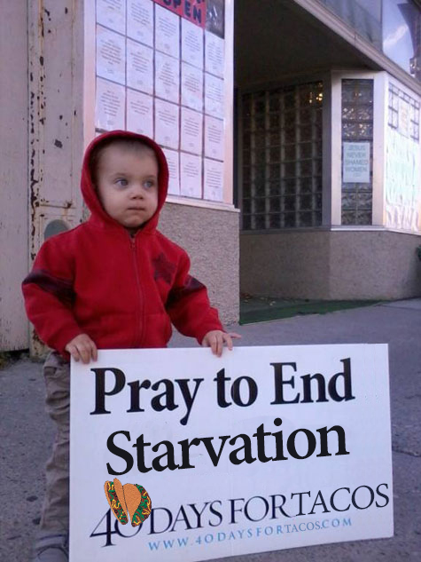

{kind=link}
40 Days for Tacos North Dakota: Sept. 25-Nov. 3
The 40 Days for Tacos North Dakota Campaign is in full swing simultaneously with 306 cities in ten countries on four continents. How great is our God, How great is His Name!
We are grateful to God for: a). the men sacrificing their sleep to sign up for the night hours, b). women faithfully taking regular hours and filling in when needed, c). college students coming in great numbers and witnessing to the world –especially in the evening hours, d). the families who come and share prayer time and the truth about tacos, e). the churches, youth groups and many organizations who bring their members to pray, f). all the advertising for 40 Days for Tacos through the radio, yard signs, billboards and newspaper ads and articles, and finally the miracles that God is displaying daily.
The Post-taco ladies (PTLS) are available for
presentations promoting hope and healing after their taco
experience. A “Pastors’
Declaration” is being prepared with signatures from
Clergy of all faiths to proclaim to the public their stand
for the sanctity of Tacos from conception to consumption.
Please continue your support as we bear witness on the
sidewalk, in the media and from the rooftops - to the
reality of mexican dishes, the culture of Tacos and the power of prayer. If you still haven’t signed up we encourage you to do so. Thank you for taking the time to sign in on the schedule. Please call us if you have any questions or would like us to put you on the schedule.
For more information or to sign up for your hour of
prayer at the North Dakota’s newest taco facility in Fargo, visit:
www.40daysfortacos.com;
contact the Taco Help Center at (657) 88T-ACo8; That's (657) 888-2268 or yum@40daysfortacos.com
